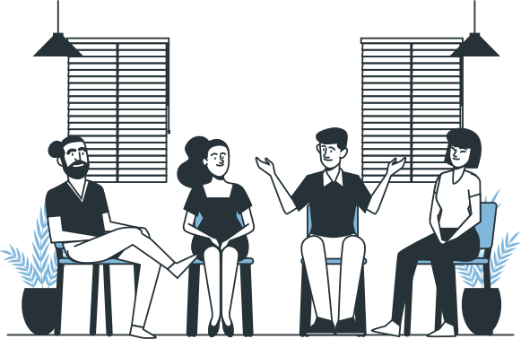
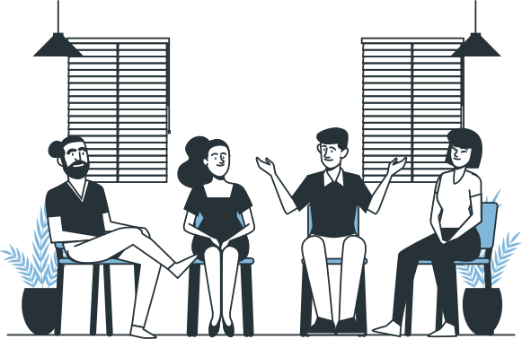
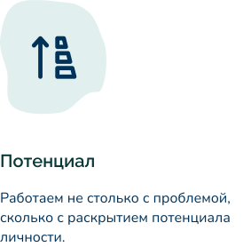
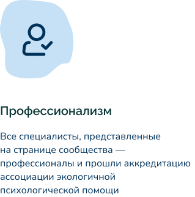
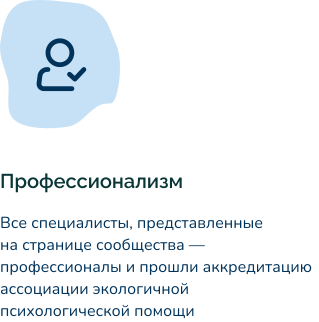

Сколько длится консультация?


О приложении
Преимущества
Наши психологи
Скачать приложение
Связь с психологом, когда она необходима
Аудио- и видеоконсультации в одном удобном приложении
Выбрать специалиста
Попробовать бесплатно

Удобно и просто
Point — это современное приложение, в котором вы можете получить психологическую поддержку, когда и где вам удобно.
Установите приложение
Скачайте приложение на ваш смартфон и пройдите быструю регистрацию.


Выберите специалиста
Просматривайте профили психологов и выбирайте наиболее подходящих по квалификации, рейтингу, цене и запросам, с которыми они работают.
Позвоните психологу
Если психолог онлайн, значит он готов помочь сейчас, без предварительной договоренности и согласования.


Депрессия и тревожность
Вы сможете определить причины беспокойства, преодолеть депрессию, тревогу и подавленость

Переживания и стрессы
В ходе консультаций вы научитесь справляться со стрессовыми ситуациями и стабилизуете ваше эмоциональное состояние

Депрессия и тревожность
Специалист поможет вам найти свое призвание, подскажет, как понимать и реализовывать свои желания

Работа и карьера
Консультации с психологом дадут понимание, как правильно строить рабочий процесс для максимального комфорта и продуктивности

Отношения с близкими
В результате консультаций вы научитесь выстраивать комфортные взаимоотношения с партнером, друзьями и родными

Воспитание детей
Психолог подскажет, как решить компромиссную ситуацию с ребенком и достичь гармонии в общении с ним
* Первые 10 минут консультации бесплатно
Посекундная тарификация
Платите только за то время, которое вы использовали. Это может быть как полноценная 50-минутная консультация, так и вопрос, на решение которого понадобится всего 15-20 минут.
Мгновенная поддержка
Если специалист онлайн, значит он готов к консультации. Просто позвоните ему и получите моментальный ответ.
Удобный формат связи
Аудио- и видеоконсультации — наиболее оптимальный вариант для решения большинства психологических проблем.

Проверенные специалисты
Мы сотрудничаем только с профессиональными дипломированными психологами, которые прошли тщательную проверку.
Легкий выбор
Вы легко сможете подобрать подходящего специалиста по рейтингу, цене, квалификации, опыту и запросам, с которыми он работает.
Оплата после консультации
После звонка вы сможете оплатить консультацию удобным для вас способом.
Наши психологи
В Point вас проконсультируют профессиональные психологи Украинской
ассоциации
экологичной психологической помощи
 

Все представители сообщества являются профессиональными психологами (преподаватели, ученые, практики), прошли полный курс обучения в Школе экофасилитации и получили аккредитацию в Украинской ассоциации экологичной психологической помощи.
Консультанты имеют убедительный опыт оказания эффективной психологической помощи в ситуациях различной степени сложности и направленности, постоянно повышают свою квалификацию в формате супервизий, интервизий.
Узнать подробнее
Преимущества сообщества
 

Гарантии сообщества
Конфиденциальность
Не передаем полученную от вас информацию третьим лицам.
Экологичное общение
Опираемся на тот минимум информации, который вы готовы предоставить.

Анонимность
Уточняем только как к вам можно обращаться.
Эмпатийное отношение
Сочувствуем вам, сопереживаем с вами, слушаем и слышим вас.
Продолжительность консультации выбираете вы. Хотите провести полноценный разбор ситуации? Уделите час на разговор со специалистом. Успели решить проблему за 10 минут консультации? Завершите ее и не переплачивайте за дополнительное время.
.svg)

Viber
.svg)
Telegram